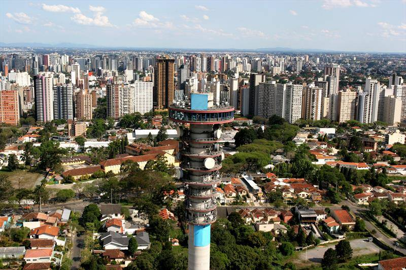

Curitiba é a capital do Paraná, um dos três Estados que compõem a Região Sul do Brasil. Sua fundação oficial data de 29 de março de 1693, quando foi criada a Câmara. Antes de seu nome oficial, a cidade era chamada Vila de Nossa Senhora da Luz dos Pinhais; Curitiba é uma palavra de origem Guarani: “kur yt yba” quer dizer “lugar cheio de pinheiros” no idioma indígena.
A Torre Panorâmica, que tem um observatório em sua parte superior, destaca-se na silhueta da cidade. Conhecida como centro cultural, Curitiba abriga vários espaços para apresentações, como a Ópera de Arame, uma estrutura de aço tubular com telhado transparente, e o enorme Centro Cultural Teatro Guaíra, que apresenta uma programação variada.
A Torre Panorâmica de Curitiba tem 109,5 metros de altura, equivalente a um edifício de 40 andares, e foi inaugurada no dia 17 de dezembro de 1991 – a data é simbolizada no local através de uma placa comemorativa: “Este painel é uma homenagem da Telepar aos 300 anos de Curitiba.
Em uma pesquisa publicada pela revista Forbes, Curitiba foi citada como a terceira cidade mais sagaz do mundo, que considera esperta a urbe que se preocupa, de forma conjunta, em ser ecologicamente sustentável, com qualidade de vida, boa infraestrutura e dinamismo econômico. Curitiba recebeu a classificação de cidade global gama por parte do Globalization and World Cities Study Group & Network (GaWC). Entretanto, alguns problemas socioeconômicos persistem, em 2016 a capital paranaense foi classificada no 44.º lugar entre as 50 cidades com as maiores taxas de homicídio do mundo.